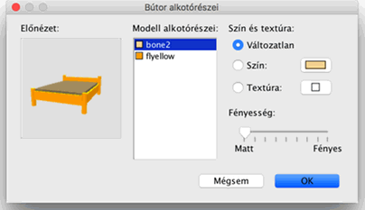

| Bútorok módosítása | |||
Módosíthatja az otthonában található bútorok helyét, méretét, emelését, szögét. Mindezt az egér vagy a Bútor > Módosítás... menüpont segítségével teheti. Ha egy elemet vagy egy csoportot jelölt ki, módosíthatja méretét, emeltségét, szögét a négy indikátor valamelyikével, melyek a bútor négy sarkában jelennek meg.
|

|
Ha az egérmutatót a bútor sarkaira viszi, az egérmutató az indikátornak megfelelõen megváltozik. Amíg az egérgombot lenyomva
tartja ezeken a sarkokon, egy súgóbuborékban olvashatja az adott tulajdonság aktuális értékét. Egy bútordarabot egy párbeszédpanel segítségével is lehet módosítani. Ehhez kattintson duplán vagy az Alaprajzon, vagy a bútorlistán a bútorra, vagy jelölje ki a bútort, majd válassza a Bútor > Módosítás... menüpontot.
Itt megváltoztathatja a bútor nevét, elforgatási szögét, a bútor középpontjának abszcisszán (X-tengely), és ordinátán (Y) való helyét,
aljának a padlótól való emeltségét, szélességét, mélységét, magasságát, színét, láthatóságát és 3D modelljének tükrözését.  A Bútor alkotórészei párbeszédablakban láthatja a szerkeszthetõ darabok listáját, az alkalmazott szín- és textúraváltoztatások 3D elõnézetét, mivel az egyes elemek elnevezése nem mindig egyértelmû. (mint például bone2 található matrac helyett, vagy flyellow a keret helyett az elõzõ ábrán). A 3Delõnézetben tetszés szerint elforgathatja az objektumot az egér használatával. |

|